Visual storyteller & front-end designer
Bridging the gap between complex data and interactive digital experiences.
Award-winning innovation for the Daily Mail and public sector.
Information design · Map illustration · Photography
I designed and implemented a comprehensive signage system for biodiversity parks across the Basildon borough. The goal was to create an educational and navigable experience that felt integrated into the natural environment. This project required a multidisciplinary approach to balance clear wayfinding with engaging storytelling about local ecology.
The build involved a mix of map illustration, content writing and original photography. I collaborated with 4Site to produce eco friendly and durable displays suitable for the public realm. By translating environmental data into accessible informational displays the project encourages visitors to engage more deeply with their local green spaces.
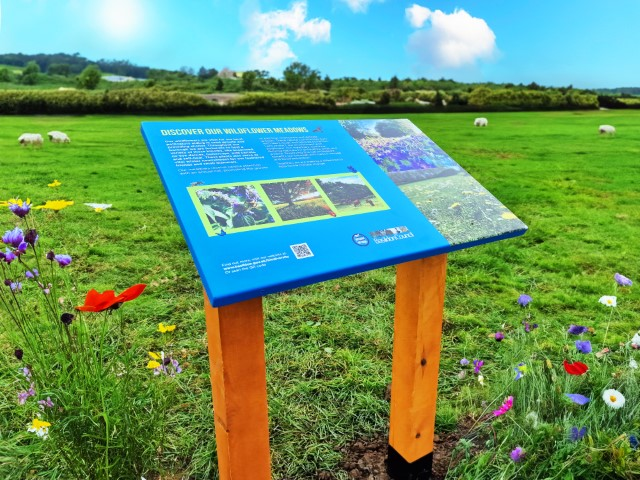
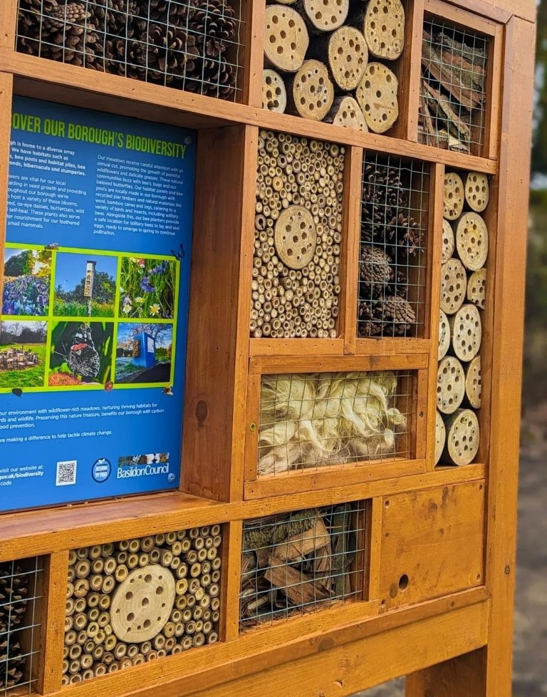
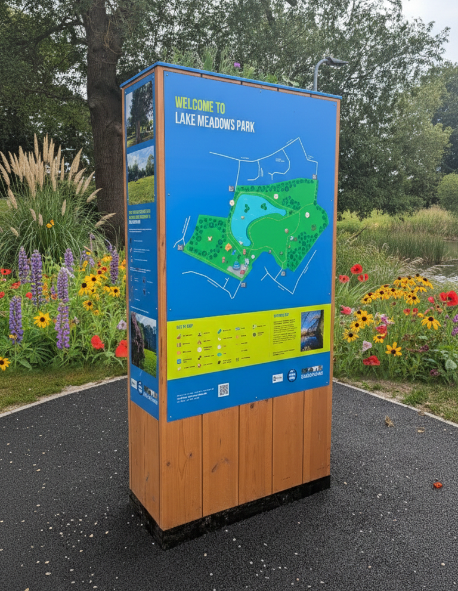
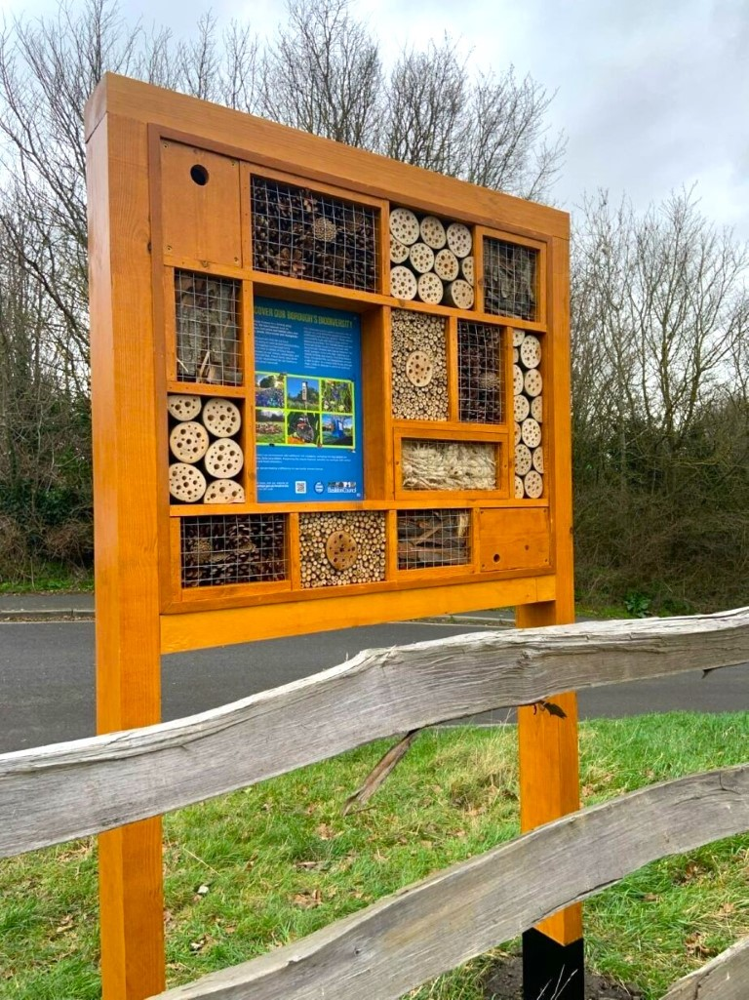
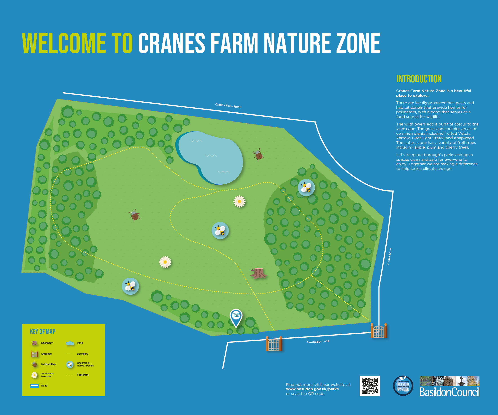
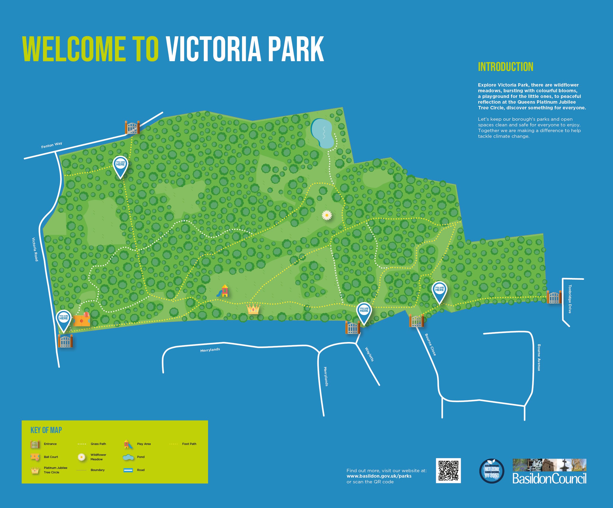
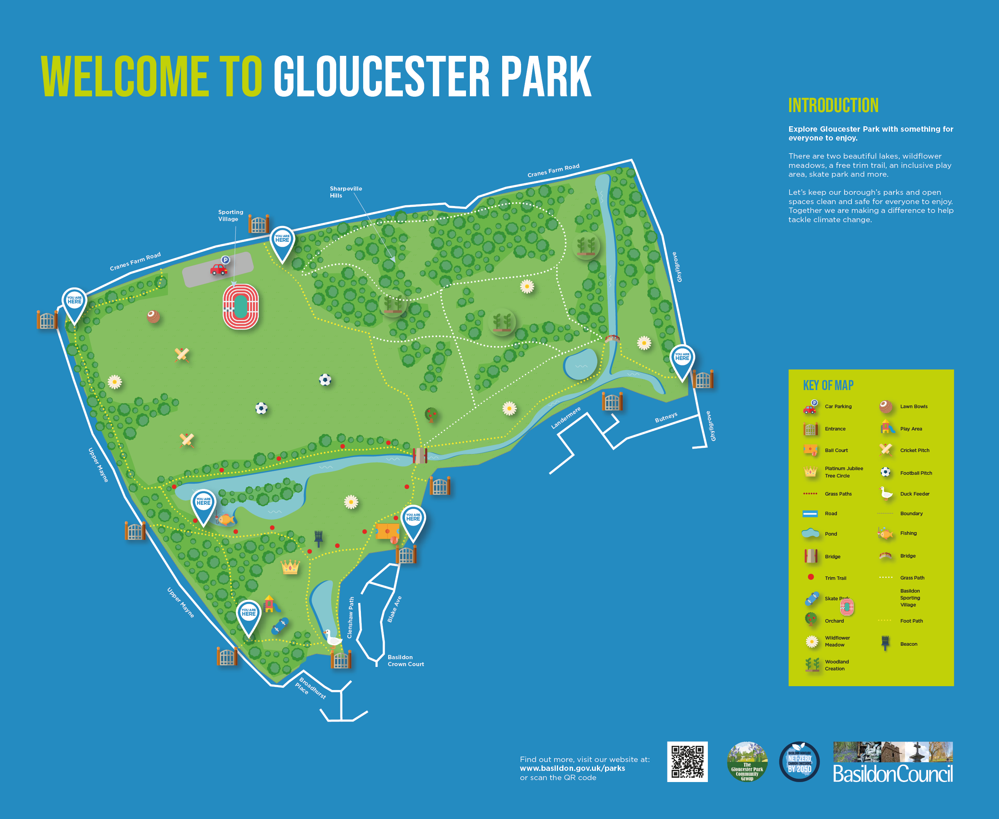
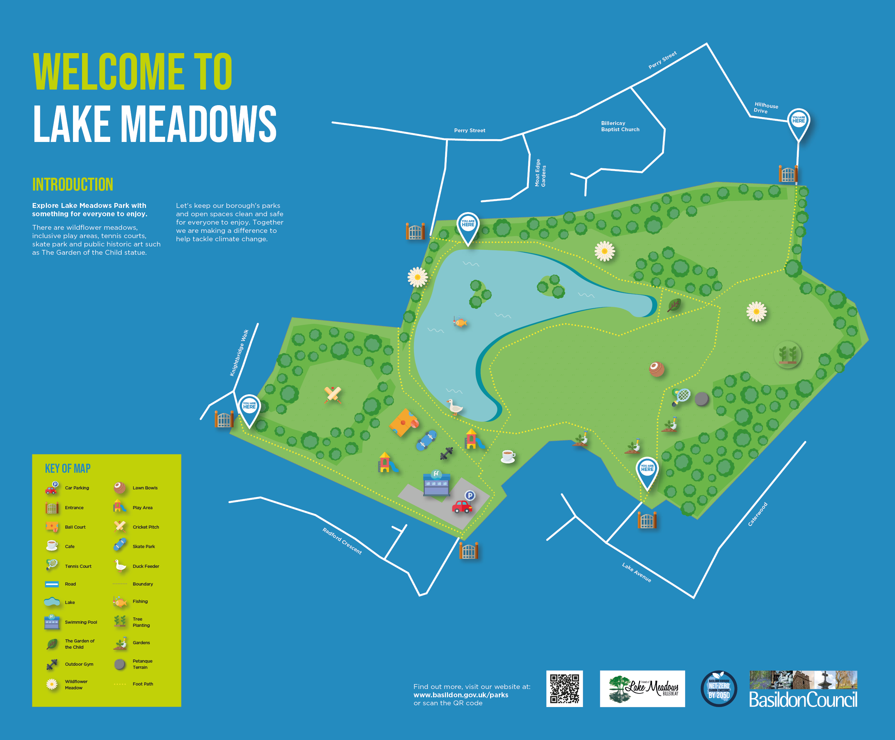
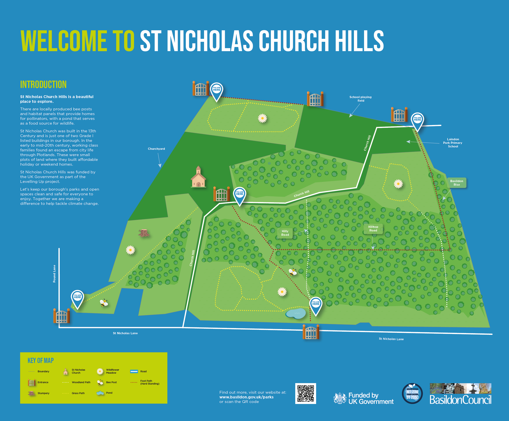
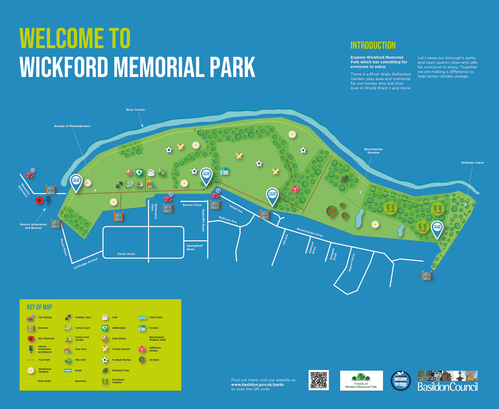
From the initial site photography to the final production coordination this project provides a cohesive visual identity for the borough's park system. It demonstrates a commitment to sustainable design and public service innovation.